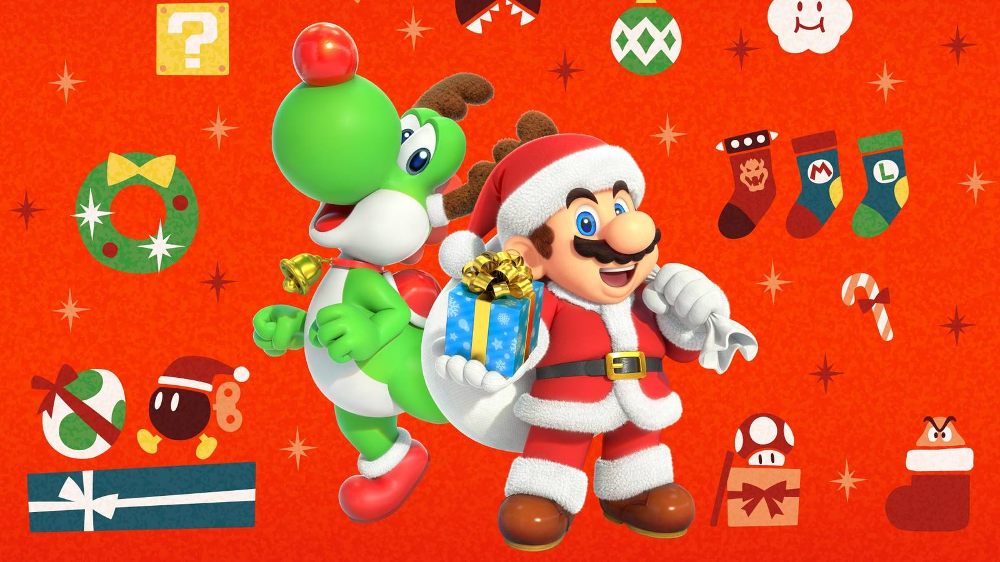

Gaming · 10 Nov 2026
Nintendo Adds eShop Gifting to Switch Consoles

Nintendo Switch update introduces the ability to gift digital software purchased on the eShop.
Multiple independent publishers are reporting on the same development: Nintendo Adds eShop Gifting to Switch Consoles.
The available reports place the development in the Gaming category. The accounts were compared for agreement on the central event rather than simply shared names or broad topics.
One of the available reports describes the development this way: Nintendo Switch update introduces the ability to gift digital software purchased on the eShop.
Readers should consult the linked source reports for additional context, updates and details that may change as the story develops.
Sources
This article was produced by the C. O. Eric AI Newsroom from the cited sources. It is published only after automated evidence and safety checks.